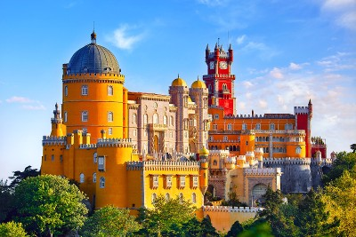
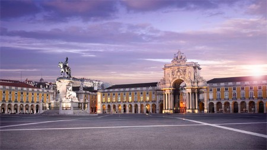
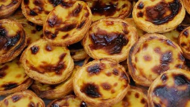
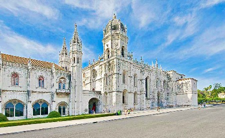
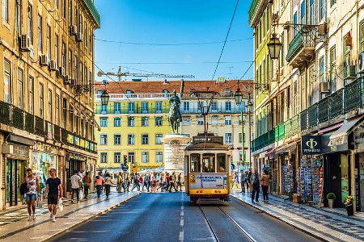
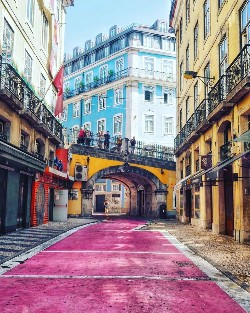
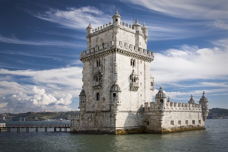

Lisboa is only one of the many beautiful cities of Portugal. Lets Explore!
Pena Palace is a Romanticist castle in São Pedro de Penaferrim most famous for its multicolored design. It is also one of the must see tourist locations to visit during your time in Portugal.
Praça do Comércio is the plaza in the center of Lisbon and is Lisboa's main square. It is only a small walk from any rbnb you may be staying at if you are staying in central Lisboa.
Pastel De Nata is the most famous dessert to try in any part of Portugal. It is known that the best place to get them lie in Lisboa. It is a dessert that is so "once in a lifetime" that you cannot find any place anywhere else that makes them the same as they are in Lisboa.
Monastery Of Jeronimos is the one of the most decorative churches of Portugal located in Belem in western Lisboa.It is a fornner monastarry of the Order of Saint Jerome and is an important examoke of Manueline, or Poirtugues Late Gothic Architecture.
The number 28 tram, operating since 1873 connects Martim Moniz with Campo Ourique, and passes through the popular tourist districts of Alfama, Baixa, Estrela and Graca. For visitors, this is the classic Lisbon tram journey, riding in a quaint yellow tram as it rattles and screeches through the narrow streets of the city. If you ever get a chance to ride, it is definitely the ride of a lifetime.
Pink Street is known as the main and most famous street of Barrio ALto. It was supposed to make the neighborhood look happier at first. Which it has succeded. Today, new bars have settled around the street and has replaced the shady and scary nightlife with something that is exciting ans safe.
Located on the north bank of the Tagus River, it comprises a limestone structure complete with four-storey, 100-foot tall, tower offering great views of many of Lisbon’s landmarks.
